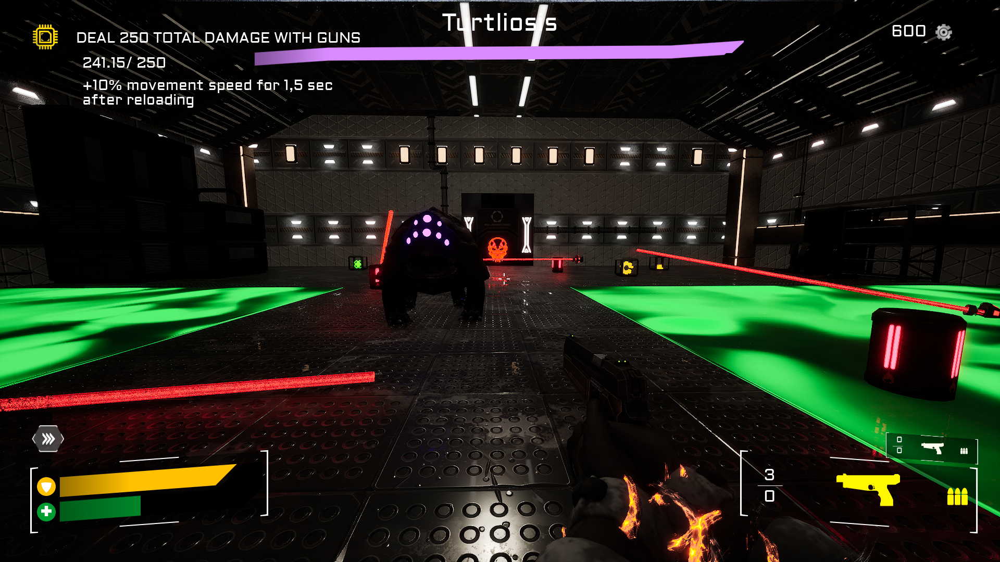
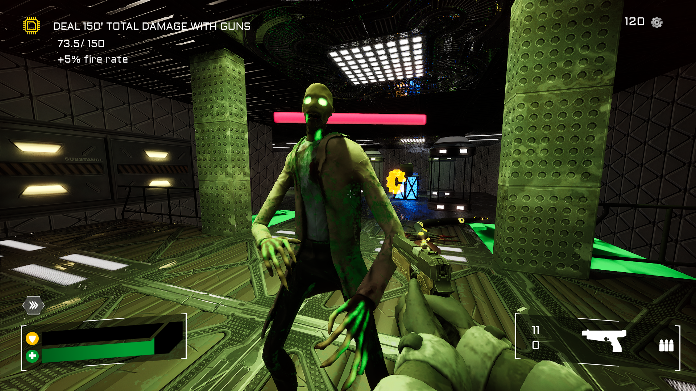
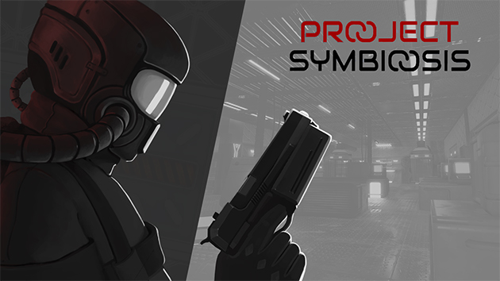

Project-Symbiosis
2025 · Game Programmer · 5 months
C++GLSLHLSLUnreal Engine
About
Project Symbiosis Project: Symbiosis is a roguelike first-person shooter in which the player impersonates a lonely clone in a laboratory overrun by mutated monsters. A strangely friendly symbiont is permanently attached to you, awaiting to be fed. Kill as many monsters as you can to make your amorphous friend level up and grant you various passive and active abilities. Worked mainly on Enemies Behavior and Environmental Objects.
Gallery


